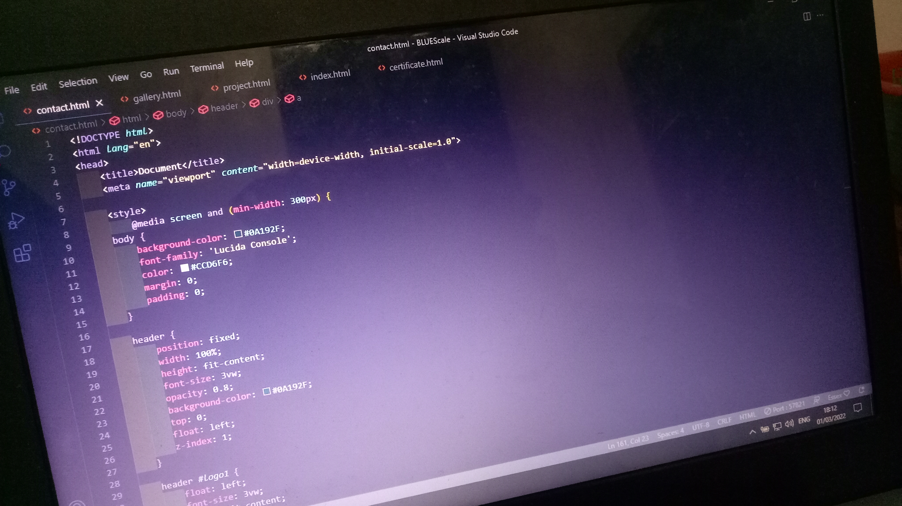
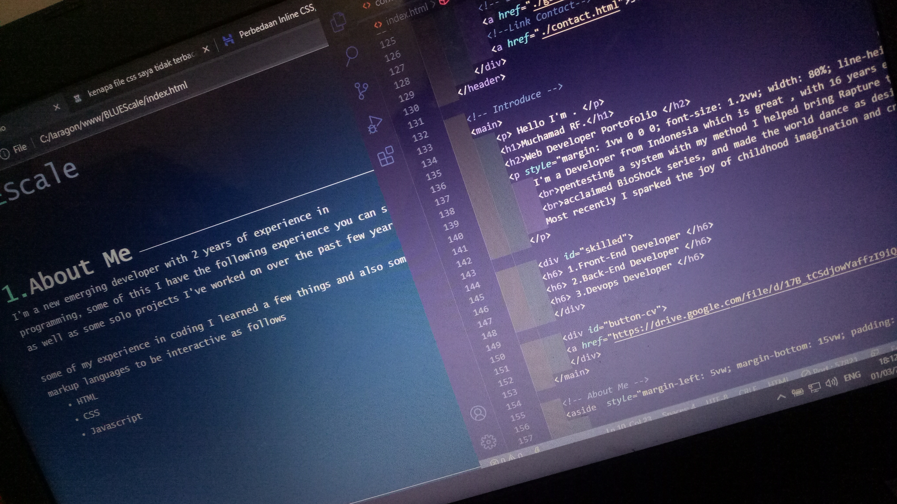
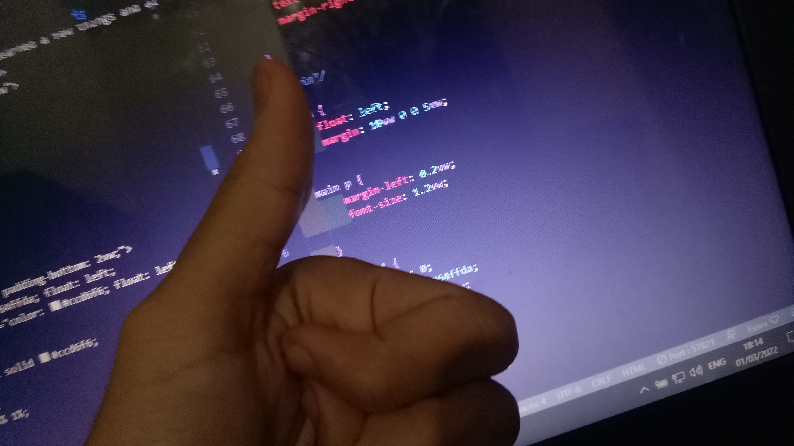
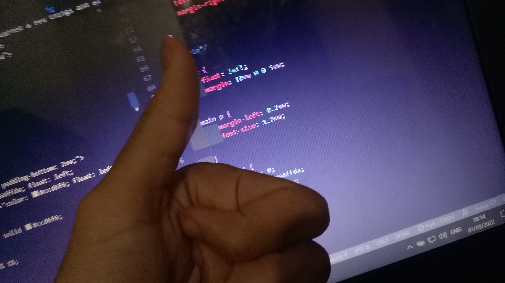
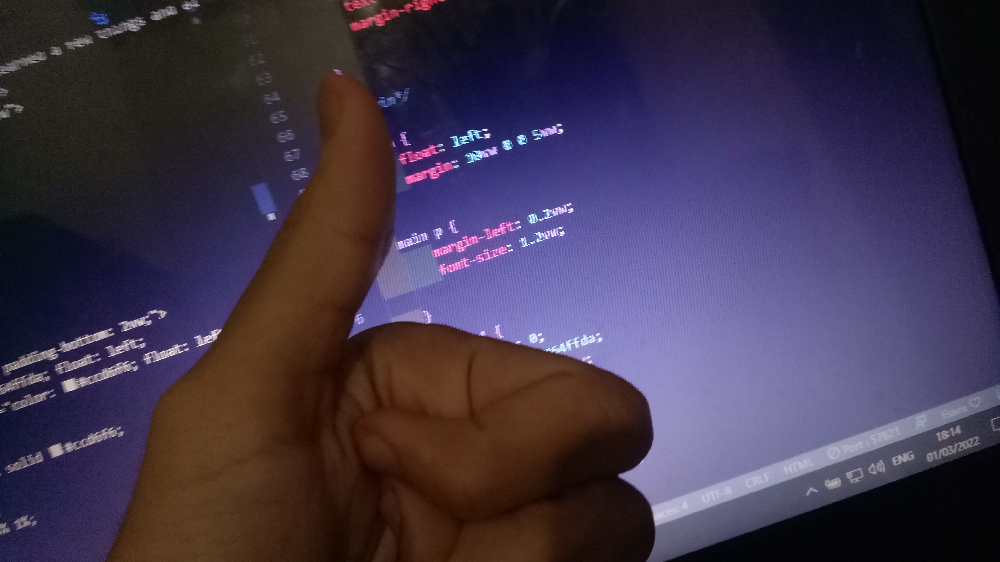
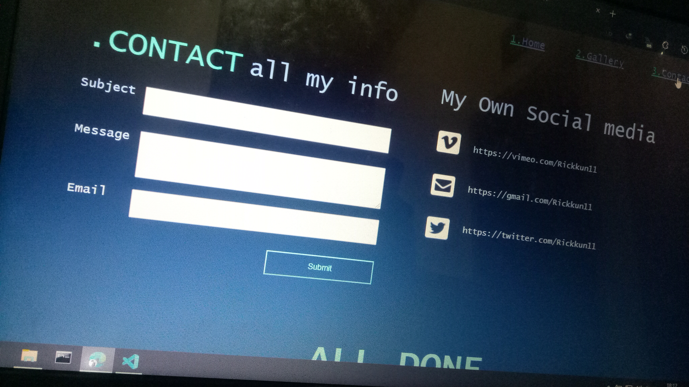
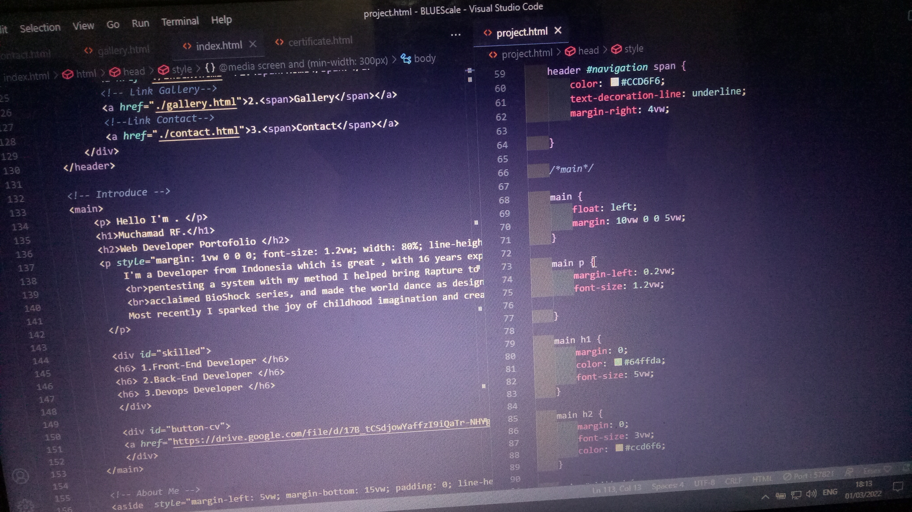

.GALLERY
MY ACTIVITY
Made By Passion
building it from scratch, is the most effective option
to grow your current business or launch it. This may be
a more suitable way, especially if you are a beginner
and do not have many financial resources. or building
it from scratch, is the most effective option to grow
your current business or launch it




 




16+ YEARS AND COUNTING OF HARD WORK TO DREAM
Believe it can be done. When you believe something can be done, really believe,
your mind will find the ways to do it. Believing a solution paves the way to solution.